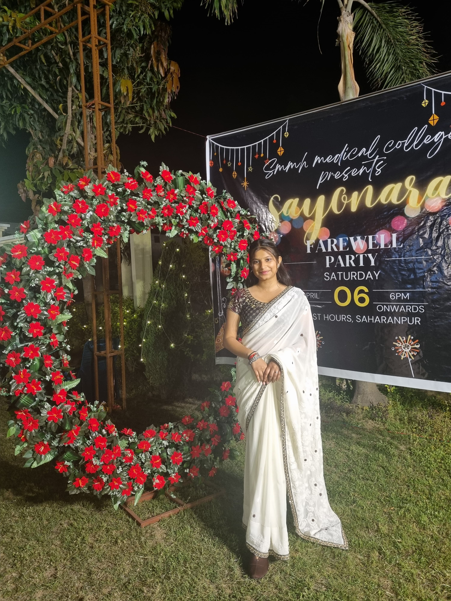
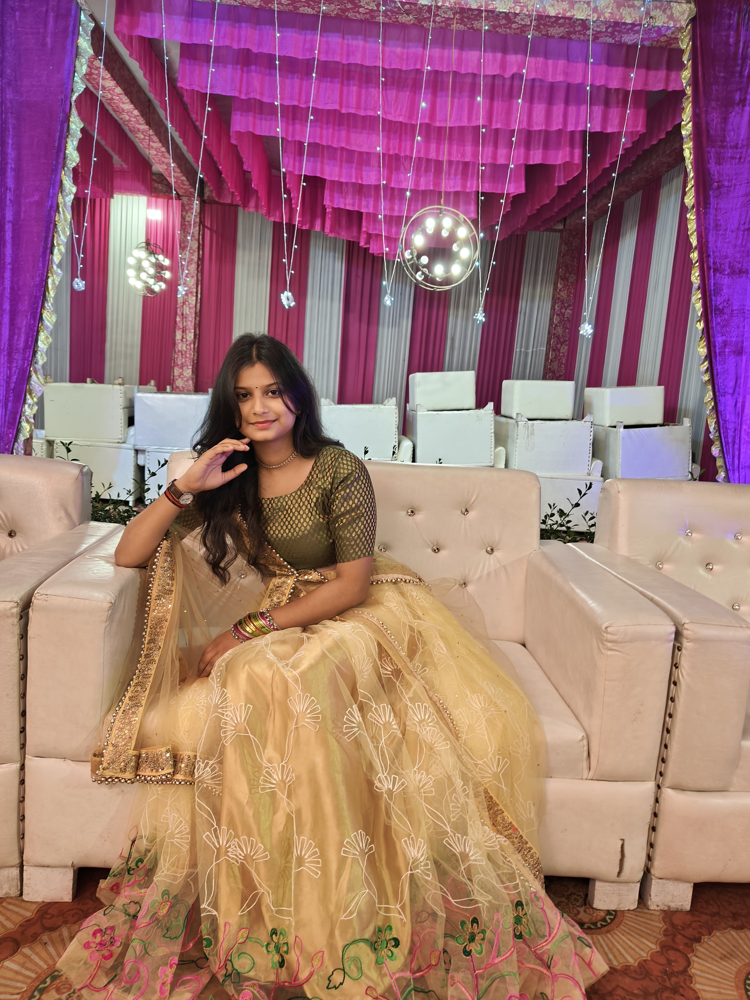
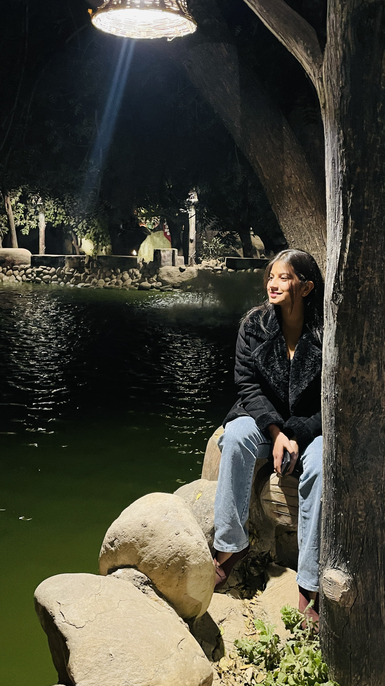
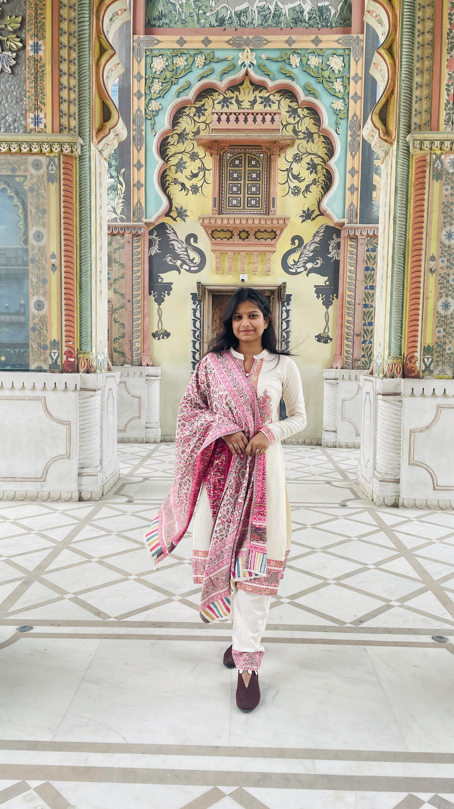
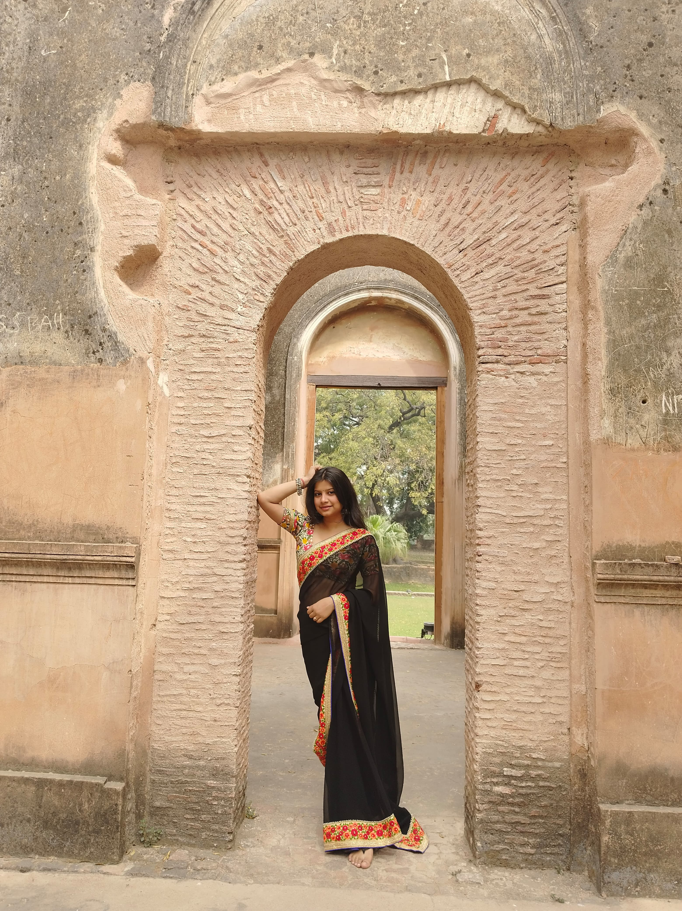

Where elegance meets serenity, there stands Dr. Shivani Chauhan — a presence as graceful as the horizon itself.

Not just admired, but remembered — because true grace is not shown, it is felt.

Even in silence, your aura speaks volumes that words could never capture.

Some moments become beautiful simply because Dr. Shivani Chauhan is part of them.

Elegance may fade from places, but the impression you leave never does.

A name that carries warmth, respect, and admiration — Dr. Shivani Chauhan.
Dear Dr. Shivani Chauhan,
Thank you for being more than just our Orthopaedics teacher — you have been a mentor, a guide, and a personality we truly admire.
Your teaching leaves an impression that stays far beyond the classroom.
I sincerely feel grateful for every lesson and every moment of knowledge you shared.
Your dedication and grace make learning memorable.
No matter where life takes you, the respect you leave behind will always remain.